Colors and styles
Color and opacity
For color definitions and conversions, you can use Colors.jl.
setcolor and sethue will apply a single color to all new graphics.
setblend will apply a smooth transition between two or more colors to all new graphics.
setmesh will apply a color mesh to all new graphics.
The difference between the setcolor and sethue functions is that sethue doesn't change the current alpha opacity (transparency), so you can change the current color without changing the current alpha opacity (transparency) value.
Named colors, such as "gold", or "lavender", can be found in Colors.color_names dictionary.
fontsize(8)cols = sort(collect(Colors.color_names))ncols = 15nrows = convert(Int, ceil(length(cols) / ncols))table = Table(nrows, ncols, 800/ncols, 800/nrows)gamma = 2.2for n in 1:length(cols) col = cols[n][1] r, g, b = sethue(col) box(table[n], table.colwidths[1], table.rowheights[1], action=:fill) luminance = 0.2126 * r^gamma + 0.7152 * g^gamma + 0.0722 * b^gamma (luminance > 0.5^gamma) ? sethue("black") : sethue("white") text(string(cols[n][1]), table[n], halign=:center, valign=:middle)end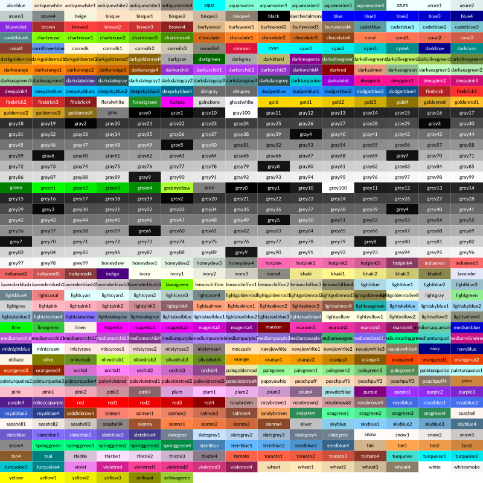
(To make the label stand out against the background, the luminance is calculated, then used to choose the label's color.)
Line styles
There are set- functions for controlling subsequent lines' width, end shape, join behavior, and dash pattern:
for l in 1:3 sethue("black") setline(20) setlinecap(["butt", "square", "round"][l]) textcentred(["butt", "square", "round"][l], 80l, 80) setlinejoin(["round", "miter", "bevel"][l]) textcentred(["round", "miter", "bevel"][l], 80l, 120) poly(ngon(Point(80l, 0), 20, 3, 0, vertices=true), action=:strokepreserve, close=false) sethue("white") setline(1) strokepath()end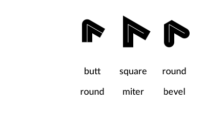
patterns = ["solid", "dotted", "dot", "dotdashed", "longdashed", "shortdashed", "dash", "dashed", "dotdotdashed", "dotdotdotdashed"]setline(12)table = Table(fill(20, length(patterns)), [50, 300])text.(patterns, table[:, 1], halign=:right, valign=:middle)for p in 1:length(patterns) setdash(patterns[p]) pt = table[p, 2] line(pt - (150, 0), pt + (150, 0), :stroke)end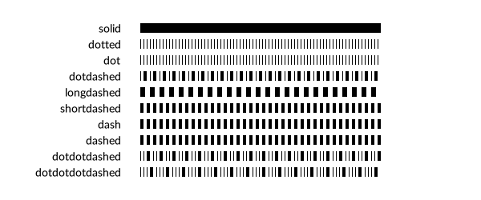
To define more complicated dash patterns, pass a vector to setdash.
dashes = [50.0, # ink 10.0, # skip 10.0, # ink 10.0 # skip ]setdash(dashes)function dashing() setline(8) setlinecap("butt") patterns = [10, 4, 50, 25, 14, 100] table = Table(fill(20, length(patterns)), [40, 325]) for p in 1:length(patterns) setdash(patterns) pt = table[p, 2] text(string(patterns), table[p, 1], halign=:right, valign=:middle) line(pt - (150, 0), pt + (200, 0), :stroke) patterns = circshift(patterns, 1) pop!(patterns) endenddashing()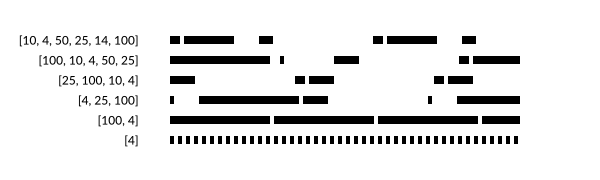
Notice that odd-numbered patterns flip the ink and skip values each time through.
Gradient blends
In Luxor, a blend is a smoothly changing color gradient.
Use setblend to select a blend in the same way that you'd use setcolor and sethue to select a solid color.
You can make linear or radial blends. Use blend in either case.
After setblend(), the current blend affects all subsequent stroked and filled graphics.
To create a simple linear blend between two colors, supply two points and two colors to blend:
orangeblue = blend(Point(-200, 0), Point(200, 0), "orange", "blue")setblend(orangeblue)box(O, 400, 100, action = :fill)rulers()translate(0, -70)rule(O) # stroked line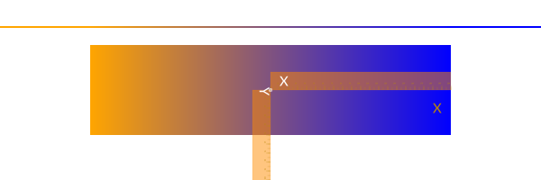
And for a radial blend, provide two point/radius pairs and two colors:
greenmagenta = blend(Point(0, 0), 5, Point(0, 0), 150, "green", "magenta")setblend(greenmagenta)box(O, 400, 200, action = :fill)rulers()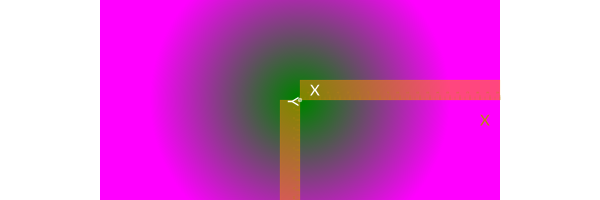
You can also use blend to create an empty blend. Then you use addstop to define the locations of specific colors along the blend, where 0 is the start, and 1 is the end.
goldblend = blend(Point(-200, 0), Point(200, 0))addstop(goldblend, 0.0, "gold4")addstop(goldblend, 0.25, "gold1")addstop(goldblend, 0.5, "gold3")addstop(goldblend, 0.75, "darkgoldenrod4")addstop(goldblend, 1.0, "gold2")setblend(goldblend)box(O, 400, 200, action = :fill)rulers()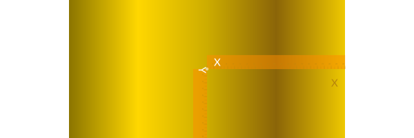
When you define blends, the location of the x/y axes (eg the current workspace as defined by translate, etc.), is important. In the first of the two following examples, the blend is selected before the axes are moved with translate(pos). The blend 'samples' the original location of the blend's definition.
goldblend = blend(Point(0, 0), Point(200, 0))addstop(goldblend, 0.0, "gold4")addstop(goldblend, 0.25, "gold1")addstop(goldblend, 0.5, "gold3")addstop(goldblend, 0.75, "darkgoldenrod4")addstop(goldblend, 1.0, "gold2")setblend(goldblend)tiles = Tiler(600, 200, 1, 5, margin=10)for (pos, n) in tiles gsave() setblend(goldblend) translate(pos) ellipse(O, tiles.tilewidth, tiles.tilewidth, action = :fill) grestore()end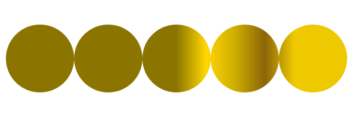
By default, outside the range of the original blend's definition, the same color is used, no matter how far away from the origin you go. But in the next example, the blend is relocated to the current axes, which have just been moved to the center of the tile. The blend refers to 0/0 each time, which is at the center of shape.
goldblend = blend(Point(0, 0), Point(200, 0))addstop(goldblend, 0.0, "gold4")addstop(goldblend, 0.25, "gold1")addstop(goldblend, 0.5, "gold3")addstop(goldblend, 0.75, "darkgoldenrod4")addstop(goldblend, 1.0, "gold2")setblend(goldblend)tiles = Tiler(600, 200, 1, 5, margin=10)for (pos, n) in tiles gsave() translate(pos) setblend(goldblend) ellipse(O, tiles.tilewidth, tiles.tilewidth, action = :fill) grestore()end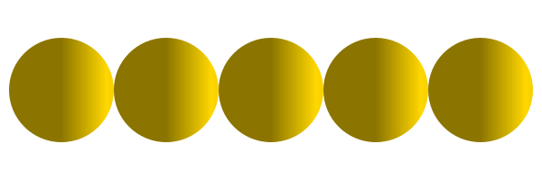
Using blendadjust
You can use blendadjust to modify the blend so that objects scaled and positioned after the blend was defined are rendered correctly.
setline(20)# first lineblendgoldmagenta = blend(Point(-100, 0), Point(100, 0), "gold", "magenta")setblend(blendgoldmagenta)line(Point(-100, -50), Point(100, -50))strokepath()# second lineblendadjust(blendgoldmagenta, Point(50, 0), 0.5, 0.5)line(O, Point(100, 0))strokepath()# third lineblendadjust(blendgoldmagenta, Point(-50, 50), 0.5, 0.5)line(Point(-100, 50), Point(0, 50))strokepath()# fourth linegsave()translate(0, 100)scale(0.5, 0.5)setblend(blendgoldmagenta)line(Point(-100, 0), Point(100, 0))strokepath()grestore()The blend is defined to span 200 units, horizontally centered at 0/0. The top line is also 200 units long and centered horizontally at 0/0, so the blend is rendered exactly as you'd hope.
The second line is only half as long, at 100 units, centered at 50/0, so blendadjust is used to relocate the blend's center to the point 50/0 and scale it by 0.5 (100/200).
The third line is also 100 units long, centered at -50/0, so again blendadjust is used to relocate the blend's center and scale it.
The fourth line shows that you can translate and scale the axes instead of adjusting the blend, if you use setblend again in the new scene.
Blend extensions
Use setblendextend() to control what happens when the shape you're drawing occupies an area larger than the blend you're using. In this example, the four possible modes are used to draw the same 150 unit radius circle using a much smaller 30 unit radial blend that starts at orange, and passes through green, to blue. If the blend is smaller than the shape, then a mode of "none" won't fill the entire shape, just the area inside the boundary of the blend.
function drawcircle_with_mode(extendmode) setdash("dot") circle(O, 150, :stroke) a_blend = blend(O, 0, O, 30, "orange", "midnightblue") addstop(a_blend, 0.5, "green") setblend(a_blend) setblendextend(a_blend, extendmode) circle(O, 150, action = :fill) sethue("black") text(string(extendmode), Point(0, -tiles.tileheight/2), halign=:center)end@layer begin translate(first(tiles[1])) drawcircle_with_mode("none")end@layer begin translate(first(tiles[2])) drawcircle_with_mode("repeat")end@layer begin translate(first(tiles[3])) drawcircle_with_mode("reflect")end@layer begin translate(first(tiles[4])) drawcircle_with_mode("pad")end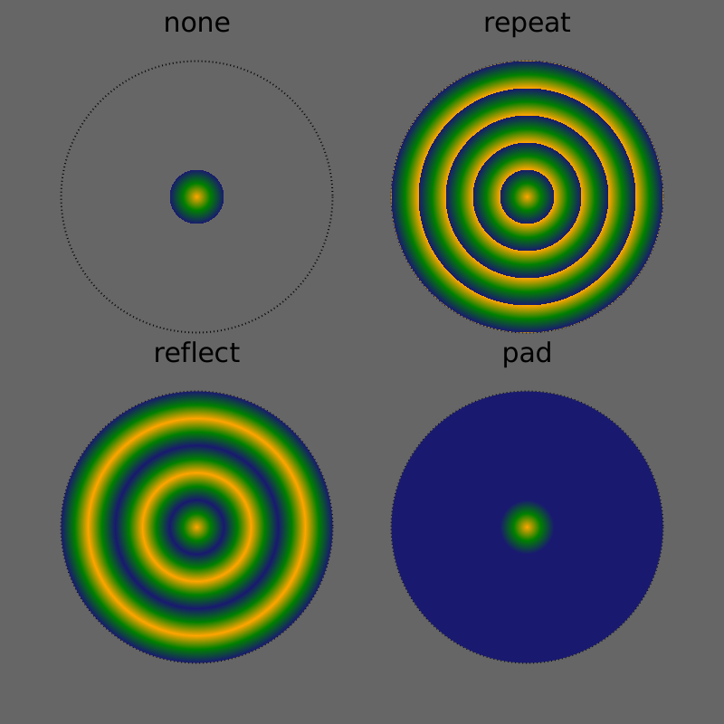
Compositing operators
Graphics software provides ways to modify how the virtual "ink" is applied to previously-drawn graphic elements. In PhotoShop and other software, the compositing process is done using what are called blend modes.
Use setmode to set the blending/compositing mode of subsequent graphics.
The following examples place a blue circle with 0.7 opacity on top of a red circle.
origin()# transparent, no backgroundfontsize(15)setline(1)tiles = Tiler(600, 600, 4, 5, margin=30)modes = length(Luxor.blendingmodes)setcolor("black")for (pos, n) in tiles n > modes && break gsave() translate(pos) box(O, tiles.tilewidth-10, tiles.tileheight-10, :clip) # calculate points for circles diag = (Point(-tiles.tilewidth/2, -tiles.tileheight/2), Point(tiles.tilewidth/2, tiles.tileheight/2)) upper = between(diag, 0.45) lower = between(diag, 0.55) # first red shape uses default blend operator setcolor(0.7, 0, 0, .7) circle(upper, tiles.tilewidth/4, action = :fill) # second blue shape shows results of blend operator setcolor(0, 0, 0.9, 0.7) blendingmode = Luxor.blendingmodes[mod1(n, modes)] setmode(blendingmode) circle(lower, tiles.tilewidth/4, action = :fill) clipreset() grestore() gsave() translate(pos) sethue("antiquewhite") txt = Luxor.blendingmodes[mod1(n, modes)] pos = O + (0, tiles.tilewidth/2) box(pos, textextents(txt)[3] + 5, 25, action = :fill) sethue("black") text(txt, pos, halign=:center, valign=:middle) grestore()end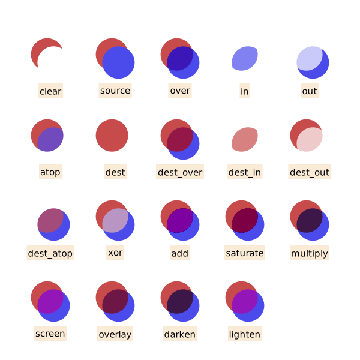
Notice in this example that clipping was used to restrict the area affected by the blending process.
In Cairo, these blend modes are called operators. For a more detailed explanation, refer to the Cairo documentation.
You can access the list of modes with the unexported symbol Luxor.blendingmodes.
Meshes
A mesh provides smooth shading between three or four colors across a region defined by lines or curves.
To create a mesh, use the mesh function and assign the resulting mesh object to a variable. To use a mesh, pass the mesh object variable to the setmesh function.
The mesh function accepts either an array of Bézier paths or a polygon.
This basic example obtains a polygon from the drawing area using box(BoundingBox()... and uses the four corners of the mesh and the four colors in the array to build the mesh. The paint function fills the drawing.
garishmesh = mesh( box(BoundingBox(), vertices=true), ["purple", "green", "yellow", "red"])setmesh(garishmesh)paint()setline(2)sethue("white")hypotrochoid(180, 81, 130, :stroke)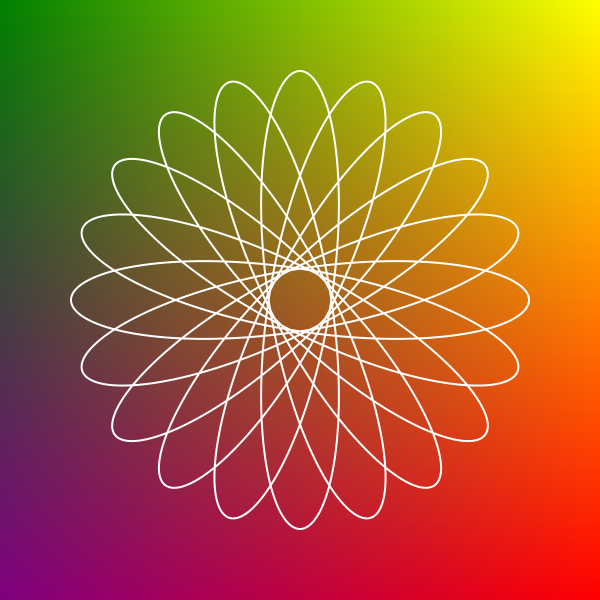
The next example uses a Bézier path conversion of a square as the outline of the mesh. Because the box to be filled is larger than the mesh's outlines, not all the box is filled.
setcolor("grey50")circle.([Point(x, y) for x in -200:25:200, y in -200:25:200], 10, action = :fill)bp = makebezierpath(box(O, 300, 300, vertices=true), smoothing=.4)setline(3)sethue("black")drawbezierpath(bp, :stroke)mesh1 = mesh(bp, [ Colors.RGBA(1, 0, 0, 1), # bottom left, red Colors.RGBA(1, 1, 1, 0.0), # top left, transparent Colors.RGB(0, 0, 1), # top right, blue Colors.RGB(1, 0, 1) # bottom right, purple ])setmesh(mesh1)box(O, 500, 500, action = :fillpreserve)sethue("grey50")strokepath()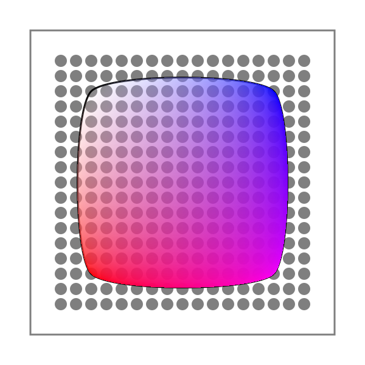
The second example uses a polygon defined by ngon as the outline of the mesh. The mesh is drawn when the path is stroked.
pl = ngon(O, 250, 3, π/6, vertices=true)mesh1 = mesh(pl, [ "purple", "green", "yellow" ])setmesh(mesh1)setline(180)poly(pl, :strokepreserve, close=true)setline(5)sethue("black")strokepath()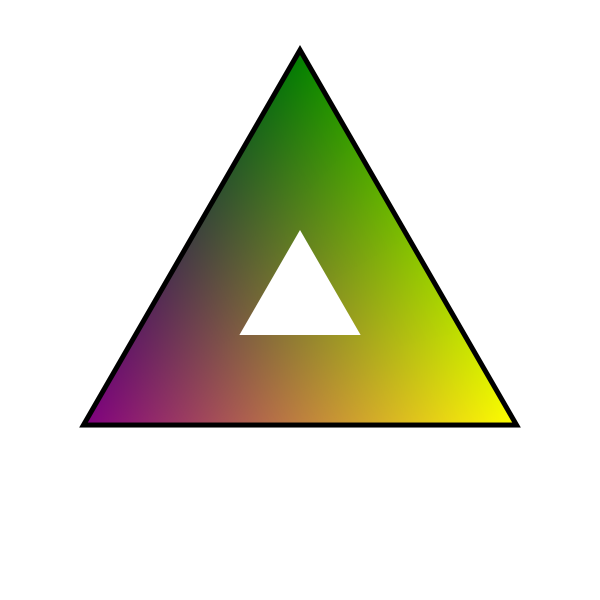
So far these meshes have contained a single defined area - a single 'patch'. It's possible to construct a mesh that consists of more than one patch. The following example uses add_mesh_patch to build a single mesh consisting of 100 smaller patches, which are placed next to each other but don't always define the same colors at identical control points.
tiles = Tiler(500, 500, 10, 10, margin=0)the_mesh = mesh(rect(first(tiles[1]), 10, 10), ["red"])col1 = RGB(rand(), rand(), rand())col2 = RGB(rand(), rand(), rand())col3 = RGB(rand(), rand(), rand())col4 = RGB(rand(), rand(), rand())for (pos, n) in tiles bx = box( pos - (tiles.tilewidth/2, tiles.tileheight/2), pos + (tiles.tilewidth/2, tiles.tileheight/2), vertices = true) add_mesh_patch(the_mesh, bx, Random.shuffle!([col1, col2, col3, col4]))endsetmesh(the_mesh)paint()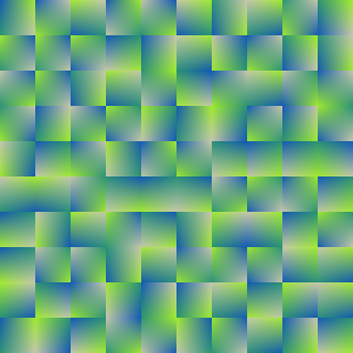
The next example constructs a conical mesh from many triangular patches, where each patch shows a different area of the HSB color space. Any graphic drawn after setmesh(), such as the hypotrochoid, is drawn using the mesh.
using Luxor, Colors@draw begin background("grey10") radius = 300 L = 300 mesh1 = mesh([Point(0, 0), polar(radius, 0), polar(radius, 2π / 100)], [RGBA(0, 0, 0, 0)]) sethue("red") for θ in range(0, 2π, length=L) t = [O, O + polar(radius, θ), O + polar(radius, θ + 2π / L)] add_mesh_patch(mesh1, t, [ HSB(rescale(θ, 0, 2π, 0, 360), 0.9, 1), HSB(rescale(θ, 0, 2π, 0, 360), 0.9, 1), HSB(rescale(θ, 0, 2π, 0, 360), 0.9, 1), ]) end setmesh(mesh1) hypotrochoid(350, 155, 100, :stroke)end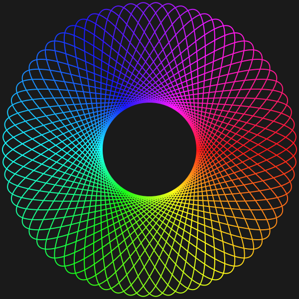
Masks
A simple mask function lets you use a circular or rectangular shape to control graphics that are drawn over it. mask takes a position and a shape, and returns a value between 0 and 1 for that position, depending on its position relative to the shape.
In the first example, the gray color of each tile is determined by its location relative to the center of the masking circle (O, bw/2); the value is 1.0 at the center, and 0.0 at the circumference. The value could be used to control opacity, shape, or anything else that is relevant to graphics at a particular position.
tiles = Tiler(600, 600, 15, 15, margin=0)bw = boxwidth(BoundingBox())for (pos, n) in tiles setgray(mask(pos, O, bw/2)) box(pos, tiles.tilewidth, tiles.tileheight, action = :fillstroke)endsethue("white")circle(O, bw/2, :stroke)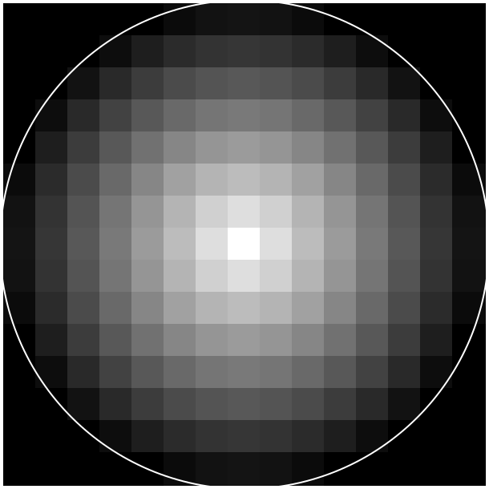
The second example uses the distance of each tile relative to the rectangle O, bw, bw to determine the gray color.
tiles = Tiler(600, 600, 30, 30)bw = boxwidth(BoundingBox())bh = boxheight(BoundingBox())for (pos, n) in tiles mv = mask(pos, O, bw, bh, easingfunction=easeinoutcubic) setgray(mv) box(pos, tiles.tilewidth, tiles.tileheight, action = :fillstroke)end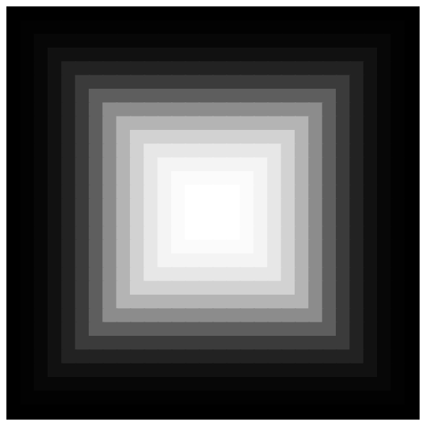